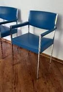
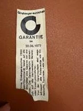

Unsere Historie
Mitten in Bonndorf entsteht eine der prägenden Zahnarztpraxen der Region, der Grundstein für eine über 100-jährige Tradition.
Dr. Stritts Schwiegersohn tritt in die Praxis ein. Sie bleibt in Familienhand und wächst weiter mit der Region.
Zahnmedizin mit Herz und Präzision in dritter Generation. Die Praxis bleibt ein fester Bestandteil Bonndorfs.
Ein neues Kapitel beginnt, mit Respekt vor der Geschichte und dem Blick nach vorn. Die Praxis wird modernisiert, Werte bleiben.
Zwei Generationen arbeiten nun Seite an Seite. Die Zukunft der Praxis bleibt familiär und regional verwurzelt.
Über 100 Jahre Erfahrung, ein Team mit außergewöhnlicher Kontinuität, eine Praxis, die bleibt.
Ein Lächeln, das Generationen verbindet.
Zwischen Behandlung und Gespräch war immer Platz für ein Lachen. Was diese Praxis seit jeher ausmacht, ist nicht allein die Medizin, sondern die Nähe zu den Menschen, die ihr vertrauen.

Wer erkennt sich wieder?
Vier Jahrzehnte, viele Gesichter, ein Ort. Vielleicht entdecken Sie auf einem dieser Bilder ein bekanntes Lächeln, eine frühere Kollegin, einen Nachbarn oder
sich selbst.
Sie erkennen jemanden oder haben selbst noch Fotos aus dieser Zeit? Erzählen Sie es uns, wir sammeln die Geschichte unserer Praxis weiter.
Geschichte teilenEin Blick in die Räume von damals
Drei Aufnahmen aus dem Archiv, und dieselben Räume, wie sie heute aussehen.
Wenn zwei Traditionen sich begegnen
In unserem Wartezimmer stehen Stühle der Schweizer Traditionsfirma Girsberger, Modell „Eurochair", ein Designklassiker der 1970er Jahre.
Gekauft 1973, gefertigt in Endingen am Kaiserstuhl, begleiten sie unsere Praxis seit über 50 Jahren. Auf dem Etikett im Inneren steht noch die ursprüngliche Garantie: gültig bis zum 30. Juni 1977.
Statt sie zu ersetzen, haben wir sie fachgerecht neu polstern lassen, von Girsberger selbst, demselben Haus, aus dem sie vor über fünf Jahrzehnten kamen. Form, Stabilität und Sitzkomfort suchen bis heute ihresgleichen.


Dieselbe Lampe. Ein halbes Jahrhundert Arbeit.
Über der Werkbank in unserem Labor hängt seit 1973 dieselbe Scherenlampe. Wo früher Waage und Handstück den Ton angaben, arbeiten wir heute mit moderner Technik. Das Licht ist geblieben.
Geschichte gehört zu unserer Identität.
Unsere Praxis ist über viele Jahrzehnte gewachsen. Generationen von Mitarbeiterinnen und Mitarbeitern haben diesen Ort geprägt und das Vertrauen aufgebaut, das uns bis heute trägt.
Deshalb haben wir uns bei der Modernisierung bewusst entschieden, nicht alles Alte zu ersetzen. In vielen Behandlungszimmern sind liebevoll aufgearbeitete Schränke aus früheren Zeiten erhalten geblieben. Auch unsere historischen Stühle wurden sorgfältig restauriert und begleiten unsere Praxis bis heute.
Für uns sind sie weit mehr als Möbelstücke. Sie erinnern daran, dass moderne Zahnmedizin und der respektvolle Umgang mit der eigenen Geschichte wunderbar zusammenpassen.
Ankommen und willkommen sein
Der erste Eindruck zählt, damals wie heute. Wo einst Karteikarten und Terminbuch den Empfang bestimmten, begrüßen wir Sie heute an einer hellen, offenen Rezeption, mit demselben freundlichen Blick.
Und eine schöne Kontinuität: Am Empfang von heute sitzt Frau Anette Gantert, die Sie auch auf den Teamfotos weiter oben entdecken können.
Übrigens: Einige Schränke aus jener Zeit sind bis heute im Einsatz, inzwischen mehrfach neu lackiert. Auf den Bildern können Sie sie wiederentdecken.
Wo aus Sorge Vertrauen wird
Der Behandlungsstuhl von einst hat viele Generationen begleitet. Heute arbeiten wir in einem lichten Raum mit moderner Technik, einer freundlichen Wandgestaltung und viel Blick nach draußen.
Geblieben ist, was zählt: Zeit, Ruhe und eine Behandlung, die den Menschen sieht.
Vom Sprechzimmer zum lichten Raum
Wo früher schwere Vorhänge und dunkles Mobiliar den Raum prägten, sorgen heute helle Farben, ein florales Wandbild und moderne Geräte für eine Atmosphäre, in der man sich wohlfühlt.
Ein klareres Bild, in jeder Hinsicht
Die alte Röntgeneinheit an ihrem Stativ hat über Jahrzehnte gute Dienste geleistet. Heute liefert moderne, strahlungsarme Technik in Sekunden präzise Aufnahmen, schonend für Sie und genau für uns.
Geschichte verpflichtet.
Seit 1925 verändert sich die Zahnmedizin ständig. Was geblieben ist, ist unsere Haltung: Menschen mit Respekt zu begegnen, sorgfältig zu arbeiten und Verantwortung über Generationen hinweg zu übernehmen. Genau deshalb schreiben wir diese Geschichte bis heute weiter.
„100 Jahre, vier Generationen, ein Haus. Das nächste Kapitel schreiben wir mit Ihnen."
Sprechzeiten
Außerhalb der Sprechzeiten: zahnärztlicher Notdienst 01805 911-620
Kontakt
Sie möchten einen Termin vereinbaren oder uns etwas mitteilen? Nutzen Sie ganz einfach unser Kontaktformular, oder noch einfacher: buchen Sie direkt online.